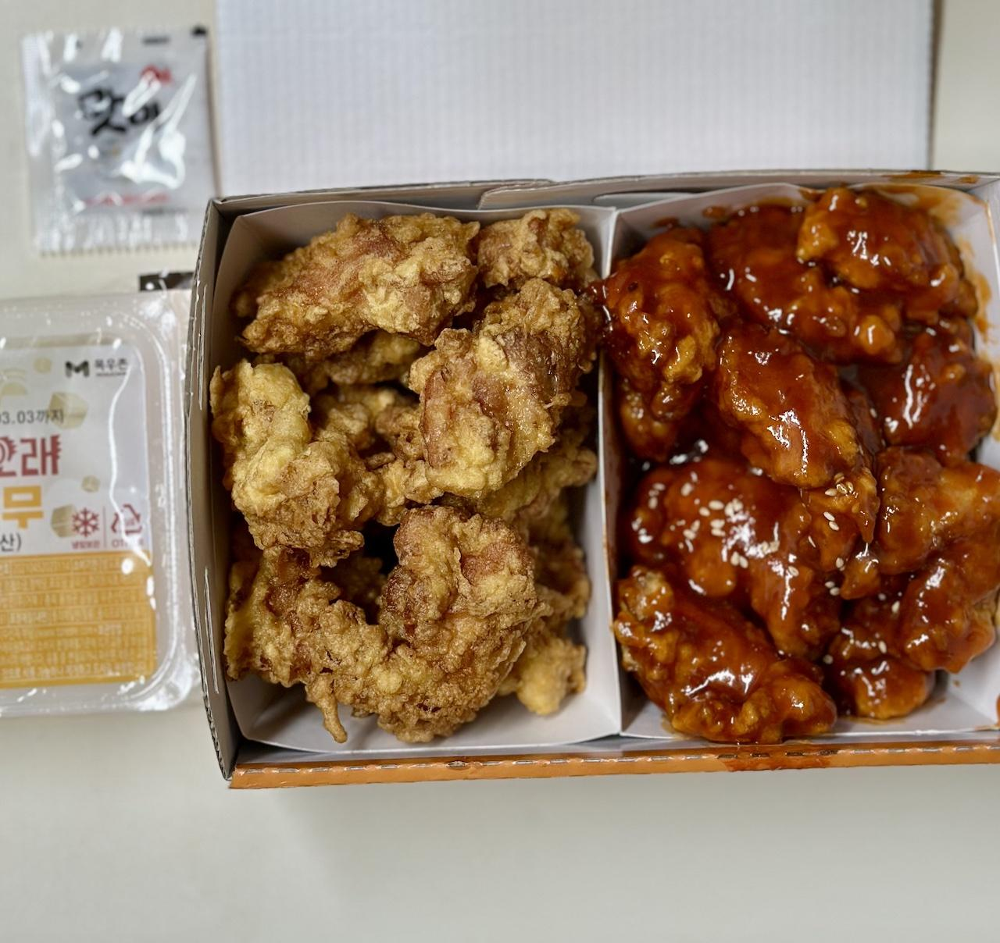
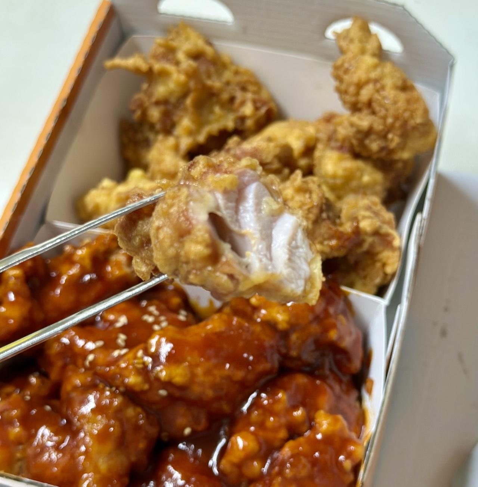

또래오래의 후라이드반+양념반 순살 치킨에 대한 기록
어느 날 또다시 찾아온 식사 메뉴 선정이라는 고뇌의 시간, 어찌하나 한참을 고민했지만 답이 나오지 않았는데 "한동안 안 먹었으니 치킨 시켜 먹을까?" 하는 생각 없던 소리에 다행히도 가족 구성원 중 발언력이 가장 센 분(?)께서 긍정해 주셨다. 그리하여 오랜만에 어떤 치킨을 시켜먹을까 찾아보게 되었다.
다만 치킨 프랜차이즈 선택에는 조건이 있다. 이 조건에는 '닭다리살 순살이 아니면 잘 안 먹는 첫째의 식성(?)'이 큰 비중으로 포함되어 있다. 개인적으로는 순살에는 닭다리살과 가슴살이 섞여 있는 것을 좋아하지만 나머지 가족들 대부분이 닭다리살로만 구성된 것을 선호하기 때문에 개인의 선호는 좀 무시되는 편이다. 여담이지만 닭다리살만 쓰는 순살 치킨을 팔던 가게가 주변에서 상당히 많이 사라진 것은 좀 안타깝다. 후... 불경기...
어쨌든 그리하여 정보를 찾아봤고, 결국 순살에는 닭다리살만 쓴다는 '또래오래'의 순살치킨을 주문해서 먹어보기로 했다. 배민에서 정확한 메뉴명은 '후라이드반+양념반'이었고 세부 옵션은 '순살'만 추가했다. 가격은 할인 이벤트 중이어서 정확한 가격은 모르겠지만 2만원 초중반 정도였던 것 같다.
배달은 굉장히 빨리 왔다
뭔가 선물 상자를 연상케 하는 패키지를 받았지만 왠지 치킨에는 어울리지 않는다는 느낌을 받았다. 하지만 치킨 패키지 디자인이야 큰 의미는 없는 데다 계속 바뀔 테니 그냥 넘어가자.
 생각보다 맛있게 생기진 않았다.
비주얼적인 면에서는 보너스 점수를 주기엔 좀 무리 같다. 생각보다 맛있게 생기진 않았다. 물론 순전히 시각적인 판단이고 본론은 더 이어진다.
콜라 한 캔도 같이 왔지만 첫째와 둘째의 장난감이 되어 탄산이 쥐어짜지는 불운함(?)을 막기 위해 오자마자 바로 냉장고로 피신시켰다. 기왕이면 제로 콜라도 선택할 수 있게 해줬으면 좋겠다.
이제 식감과 맛 등을 정리해보자
후라이드 순살은 전반적으로 만족스러웠다. 튀김옷은 두껍지 않았고 딱딱하지도 않고 적당히 바삭했다. 튀김옷의 맛은 약간 빵 맛이 느껴지는 듯했다. 속살은 적당히 부드럽고 육즙도 제법 많은 편이었다. 밑간은 제법 세게 되어있어서 더 간이 센 음식을 먹지 않는 한 굳이 소금에 찍어 먹지 않아도 될 정도였다. 후추 밑간 수준의 약간 매운맛이 있었지만 첫째가 별로 느끼지 못 할 정도로 세진 않았다.
양념 순살엔 후한 점수를 주긴 힘들 것 같다. 맛은 고추장 + 케찹 + 계피 느낌으로 약간 매콤하며 튀김 맛이 느껴지지 않을 정도로 자극적인 맛이었고 식감은 많이 끈적였다. 양념은 튀김옷을 당연히 눅눅해지게 만들 수밖에 없었지만 좀 심하게 눅눅하게 만들었다. 그저 양념에는 안 어울리는 튀김옷이었을 지도 모르겠지만 그래서 약간 감점을 줘야 할 것 같다.
 육즙이 제법 흐르는 닭다리 순살
또래오래를 주문한 핵심적인 이유 중 하나로 바로 순살이 100% 닭다리살로만 구성되어 있다는 것이 있었는데 이는 사실로 확인되었다. 가슴살은 단 하나도 없었다. 내심 안타까웠지만 이 글을 쓰는 작자를 제외한 가족 구성원 모두 만족할 수준이었다. 사진에서는 육즙이 잘 보이진 않지만 뚝뚝 떨어지는 수준이라는 정도로 정리해 보자.
결론
순살치킨의 세계에서 또래오래라는 새로운 마음에 드는 브랜드를 찾은 건 만족스럽다. 특히 후라이드 치킨은 다시 시켜먹을 생각이 있다.
다만 양념치킨은 맛이 좀 질리는 것 같았다. 맛이 없는 수준은 아니지만 다음 번엔 다른 걸로 시켜 먹을 계획이다.
이로써 당분간 뼈치킨은 페리카나, 순살치킨은 또래오래라는 구도가 만들어질 지도 모르겠다는 결론으로 이 글을 마치자. 물론 이 글을 쓰는 작자의 집 근처에 한정된 이야기일 뿐이지만 말이다.